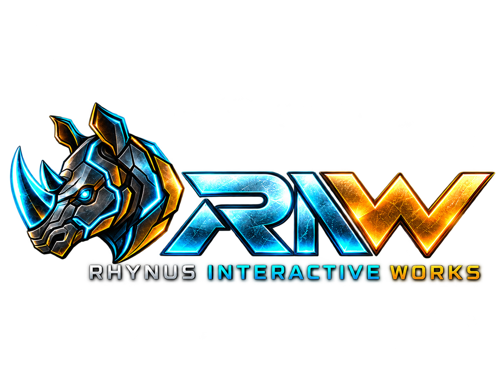

RIW / EXPERIMENTO 001● PROCESAMIENTO LOCAL
RHYNUS CAM LAB
Un pequeño laboratorio de visión artificial. Controla el movimiento, despierta al rinoceronte.
◈ CAM 01 / LIVE VIEW● STANDBY
MOTION
LOCAL / NO UPLOAD
¿Qué está haciendo?
Compara fotogramas reducidos para detectar cambios. Si ve movimiento, muestra una máscara 2D de rinoceronte durante unos segundos. No localiza tu cara ni detecta sonrisas todavía.
🔒 El vídeo se procesa en este navegador, sin subir imágenes a un servidor. El acceso a la cámara requiere tu permiso.